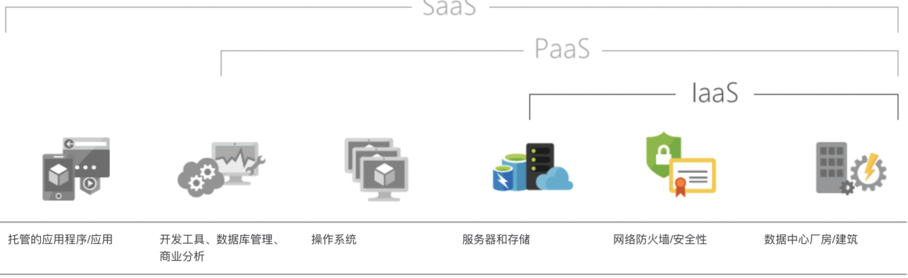

优雅对接第三方API
优雅对接第三方API
前言
在日常的开发中，我们难免会遇见需要和第三方系统进行交互的需求，此时如何设计优雅地对第三方暴露的API就很重要了，不然就可能会出现接口被刷、数据泄露等安全问题。
非技术对接需要注意的点：
与第三方平台对接时，一定要积极和谐友善沟通，要是自己沟通不融洽，对自己的开发进度以及整体团队的对接进度就得往后延期了。
沟通方向要在同个频道，不然可能带来的影响就是：自己写完api文档之后，发给对方之后，发现写得完全就不在方向上，这就很尴尬了。
第三方API对接
1. 网络协议方面
尽量规范双方使用https协议，因为https是http协议的升级版本，可通过对网络浏览器和网络服务器中间传输的数据进行加密，安全性方面还是比http协议高很多的，从谷歌规范来说，也是使用https协议的。虽然使用成本相对高一些，但这是值得的。
2. 接口请求方面
- 接口请求类型（GET|POST|PUT|DELETE等等）看具体业务场景规定好；
- 入参的数据类型要规定好；
- 数据合法性校验：常规性校验以及业务校验；
- 常规性校验：包括签名校验，必填校验，长度校验，类型校验，格式校验等；
- 业务校验：根据实际业务而定，比如订单金额不能小于0等；
这里如果使用POST请求的时候，基本是规定数据传参格式为：application/json , Json格式的入参可以支持参数值拓展，对于之后的业务迭代还是友好的。
3.接口加签验签/加密解密
对接口的参数进行加签/加密，然后被调用系统可以使用双方规定好的验签/解密方式校验接口的参数是否有效，这样能够大大有利的避免许多不必要的安全隐患。
此处介绍加密、加签的基本方案和步骤。详细了解请见：浅析加密、签名和数字证书
加签验签
常见的签名方法有MD5，SHA1等，签名基本原理是通过 key/secret 的实现：
- 服务器负责为每个客户端生成一对 key/secret （ key/secret 没有任何关系，不能相互推算），保存并告知客户端。
- 当客户端调用 api 时，根据制定规则将所有请求参数串联起来并用 secret 生成签名 sign，同时可以考虑加盐 。
- 将 sign 和 key 一起放进请求参数对服务器进行调用。（注意 secret 不要传）
- 服务端收到请求，根据 key 去查 secret ，然后用同样的算法，验证签名。
- 为避免重放攻击，可加上 timestamp 参数，指明客户端可进行调用的时间窗口限制。
在实际开发中使用key去查询secret的操作略显笨重，而是采用直接线下将secret直接给到对方。
加密解密
对称加密 or 非对称加密。
4.日志记录
对于我们接口接收到的数据，以及解析之后的参数值，都用埋点日志记录下来，以防在线上服务器出问题的时候，我们找不到对应的入参数据去排查线上问题。
5.幂等校验
在日常的系统api调用中，会可能由于用户误触或者网络波动等原因，同一个时刻会多几次调用接口，我们要在实现具体业务操作之前，加一个幂等校验，例如可以对该数据中的唯一值做记录，要是先查到，就不继续实现具体业务操作，而是返回响应成功（注意：这里幂等校验要查找到该数据已经有成功调用过了，就直接返回响应成功，而不是响应失败等其他提示信息）。
常见的幂等校验实现方式
- 分布式锁实现的并发幂等校验
- 数据库层select实现前置幂等校验
- 基于缓存+MD5实现可控时间窗口的幂等校验
6.补偿重试机制
比如在电商系统中，由于大促等促销活动有可能随时产生非常大的并发，要这时候要是第三方系统刚好调用我们系统的api接口，我们的服务器刚好短暂宕机，那这可能会造成大量的数据丢失。这中间是涉及到钱的，要真的发生了，可能狗头不保，直接GG。为了保住狗头，还是需要让对方去做接口的重试机制，要是接口响应不成功，可以规定之后一定的频率回调我们的接口，比如每隔3分钟重新发起一次调用，直到累积到10次都不成功，就认为失败，要是最后一次也是调用不成功的话，基本是要把调用不成功的接口信息落库，存到mysql、redis、或者es等数据源，等事后人工干预。
7.安全机制
到了对接的业务上线之后，接口加密的数据有可能是会被不明第三方抓包以及破译的，这时候更加需要从其他方面去提升安全等级，例如：定期更换密钥。除了防住黑的一方，也有白的一方需要防范，白是谁，当然是指我们这些本身开发这块业务的开发者，这个怎么防范，只能提高自己本身的职业素质了。
8.AppId机制
大部分网站基本都需要用户名和密码才能登录，并不是谁来能使用我的网站，这其实也是一种安全机制；对应的对外提供的接口其实也需要这么一种机制，并不是谁都可以调用，需要使用接口的用户需要在后台开通appid，提供给用户相关的密钥；在调用的接口中需要提供appid+密钥，服务器端会进行相关的验证；
9.限流机制
本来就是真实的用户，并且开通了appid，但是出现频繁调用接口的情况；这种情况需要给相关appid限流处理，常用的限流算法有令牌桶和漏桶算法；
常用的限流算法包括：令牌桶限流，漏桶限流，计数器限流；
1.令牌桶限流
令牌桶算法的原理是系统以一定速率向桶中放入令牌，填满了就丢弃令牌；请求来时会先从桶中取出令牌，如果能取到令牌，则可以继续完成请求，否则等待或者拒绝服务；令牌桶允许一定程度突发流量，只要有令牌就可以处理，支持一次拿多个令牌；
2.漏桶限流
漏桶算法的原理是按照固定常量速率流出请求，流入请求速率任意，当请求数超过桶的容量时，新的请求等待或者拒绝服务；可以看出漏桶算法可以强制限制数据的传输速度；
3.计数器限流
计数器是一种比较简单粗暴的算法，主要用来限制总并发数，比如：数据库连接池、线程池、秒杀的并发数；计数器限流只要一定时间内的总请求数超过设定的阀值则进行限流；
具体基于以上算法如何实现，Guava提供了RateLimiter工具类基于基于令牌桶算法：
1 | RateLimiter rateLimiter = RateLimiter.create(5) |
以上代码表示一秒钟只允许处理五个并发请求，以上方式只能用在单应用的请求限流，不能进行全局限流；
这个时候就需要分布式限流，可以基于redis+lua来实现或者Sentinel的集群分布式限流。
10.黑名单机制
如果此appid进行过很多非法操作，或者说专门有一个中黑系统，经过分析之后直接将此appid列入黑名单，所有请求直接返回错误码；
Java 后端开发常用的 10 种第三方服务
严格意义上说，所有软件的第三方服务都可以自己开发，不过从零到一是需要时间和金钱成本的。就像我们研发芯片，投入了巨大的成本，但仍然没有取得理想的成绩，有些事情并不是一朝一夕，投机取巧就能完成的。
Java 后端开发通常会涉及到很多第三方服务，那么都有哪些成熟的方案可供直接上手使用呢？
1）IaaS
IaaS 的英文全称是 Infrastructure as a Service，即基础设施服务，指把 IT 基础设施作为一种服务通过网络对外提供，并根据用户对资源的实际使用量或占用量进行计费的一种服务模式。IaaS 可根据需求快速纵向扩缩，用户无需购买和管理自己的实体服务器和其他数据中心基础结构，从而避免了相应的开支和复杂操作。
用户通过 IaaS 可以完成的典型事项包括：
- 测试和开发。
- 网站托管。
- 存储、备份和恢复。
- Web 应用。
- 高性能计算。
- 大数据分析。
基本上所有的云服务商都提供了 IaaS 服务，国内最强大的云服务商当属阿里云。
2）PaaS
PaaS 的英文全称是 Platform as a Service，只需要提交代码到指定运行环境，代码打包、部署、IP 绑定都由平台完成。与 IaaS 相比，用户不需要管理与控制云端基础设施（包含网络、服务器、操作系统或存储），但需要控制上层的应用程序部署与应用托管的环境。
3）SaaS
SaaS 的英文全称是 Software as a Service，用户在这种模式下，不需要经过传统的安装步骤就可以通过网络使用软件。SaaS 最大的特色在于软件本身并没有被下载到用户的硬盘，而是存储在提供商的云端或者服务器。
怎么区分 IaaS、PaaS 和 SaaS 呢？来看下面这张图。
如果我们开发了一个网站，按照传统的方式，我们需要买专业的服务器（连接网络），并在上面安装服务器软件，然后再把编写好的网站部署上去。
如果采用 IaaS 服务的话，就不需要自己购买服务器了，直接在租用的云服务器上安装服务器软件并且部署网站即可。
如果采用 PaaS 服务的话，不需要购买服务器，也不需要安装服务器软件，只需要部署网站即可。
如果采用 SaaS 服务的话，网站也不需要自己开发了，直接使用服务商开发好的网站，后期的升级、维护都交由服务商来负责。
阮一峰的网络日志上这样解释三者之间的关系。假如你想做披萨生意，有三种方案。
方案一，IaaS。
他人提供厨房、炉子、煤气，你使用这些基础设施，来烤你的披萨。
方案二，PaaS。
除了基础设施，他人还提供披萨饼皮。你只需要把自己的配料洒在饼皮上，至于是牛肉味的还是奥尔良鸡翅味的，你来决定。
方案三，SaaS。
他人直接做好了披萨，你拿到手就是一个成品。你要做的就是把披萨卖出去，最好印上自己的 Logo。
4）域名
有了可以提供服务的应用后，还需要一个能够让人记得住的域名，最好越简单越好。拿维基百科来说，wikipedia.org 是一个域名，和 IP 地址 208.80.152.2 相对应，用户可以直接访问 wikipedia.org 来代替 IP 地址，域名系统（DNS）会将域名转化成便于机器识别的 IP 地址。
5）CDN
CDN 的全称是 Content Delivery Network，即内容分发网络，一种透过互联网互相连接的电脑网络系统，利用最靠近每位用户的服务器，更快、更可靠地将音乐、图片、影片、应用程序及其他文件发送给用户，来提供高性能、可扩展性及低成本的网络内容传递给用户。比较有名的 CDN 服务商有：
- Cloudflare，提供的免费版解决方案足以保护小网站免受 DDoS 之灾，也可以隐藏网站的真实 IP 地址。在海外有着极好的响应速度，国内好像不咋滴。
- 腾讯云，资源储备遍布全球 50+ 国家与地区，全网带宽 120Tbps+。国内 1100+ 加速节点，覆盖移动、联通、电信及十几家中小型运营商。
- 阿里云，全球 2800+ 节点，130T 带宽能力，六大洲覆盖，国内主流运营商支持。
- 七牛云，全球 2000 节点，20+ 运营商覆盖，访问提速 80%，应用场景包括音视频点播、大文件下载、Web 加速服务等。
- 又拍云，全球 1100+ 节点，10Tbps 带宽储备，国内主流运营商支持。
6）邮件发送
基本上每个应用都离不开邮件发送，最常用的邮件服务器就是腾讯邮箱和网易邮箱。常用的电子邮件协议包括 SMTP、POP3 和 IMAP，不过，邮件的创建和发送只需要用到 SMTP 协议就可以了。
Java 官方提供了对电子邮件协议封装的 Java 类库，就是 JavaMail，但并没有包含在标准的 JDK 中，GitHub 地址如下：
https://javaee.github.io/javamail/
记得之前接到过这样一个需求，要求发送的邮件不能到垃圾邮箱里，还挺难做的。因为邮件服务器，比如说腾讯和网易，都做了邮件的过滤器，会识别一些邮件，自动放到垃圾邮箱里。
7）短信发送
使用短信发送验证码几乎是每个应用必不可少的一部分，仿佛手机号码就代表了一个人，所以丢手机是一件非常危险的事情——需要立即挂失。短信是需要运营商支持的，所以基本上都需要依赖第三方代理。市面上有很多短信网关代理，阿里云通信是比较常用的一个，以前叫阿里大于。
阿里云通信的价格是每条短信 0.036 元，市面上还有一些其他的服务商，有些价格更低，但稳定性我个人没有测评过。我的技术交流群里就潜藏了不少做短信的商户人员。应用接入阿里云通信并不复杂，我之前在 CSDN 上分享过一个博客，很详细，图文并茂，还带源码实例，需要的小伙伴可以去围观下。
https://qingmiaogu.blog.csdn.net/article/details/78751698
8）消息推送
消息推送（Push）指运营人员通过自己的产品或第三方工具对用户移动设备进行的主动消息推送。用户可以在移动设备锁定屏幕和通知栏看到 push 消息通知，通知栏点击可唤起 APP 并去往相应页面。
移动应用上，推送已经成为一个标配功能。
iOS 在系统层面与苹果 APNs（Apple Push Notification service）服务器建立连接，应用通过观察者模式向 iOS 系统注册关注的消息，系统收到 APNs Server 消息后转发到相应的应用程序。
Android 的 C2DM（Android Cloud to Device Messaging）采取与 iOS 类似的机制，都是由系统层面来支持消息推送，但是由于 Google 的服务在国内不能稳定的访问，此方案对于国内用户来说基本是无法使用的。
鉴于 Android 平台 C2DM 推送的不可用性，国内涌现出大量的第三方推送服务提供商，目前应用最为广泛的第三方推送服务提供商包括个推、极光、友盟、小米、华为、BAT 等，我之前用个推做过一个小程序的推送 Demo，API 调用起来很简单，感觉还挺好用的。
9）开放平台
通过开放平台，可以使用 OAuth 等协议获取用户在第三方平台上的信息以实现第三方平台登录。比如用户想要登录 A 网站，A 网站让用户提供第三方网站的数据，证明自己的身份。获取第三方网站的身份数据，就需要 OAuth 授权。
国内的微博、微信、QQ 是最常见的第三方登录方式，阿里系的产品可以通过支付宝授权登录，还有一些网站绑定了 GitHub 登录。
阮一峰的网络日志上有一篇 GitHub OAuth 第三方登录示例教程：
https://www.ruanyifeng.com/blog/2019/04/github-oauth.html
10）支付接口
目前，接入最多的支付接口就是支付宝和微信。
支付宝提供了当面付、APP 支付、手机网站支付、电脑网站支付等支付接口。
提供的文档很齐全，还有 Java、PHP、.NET 等版本的 Demo。
https://opendocs.alipay.com/open/270
微信支付的话，我推荐使用开源工具库 WxJava：
https://github.com/Wechat-Group/WxJava
我们公司的网站就用的这个，支持包括微信支付、开放平台、小程序、企业微信/企业号和公众号等的后端开发，很齐全。
 微信
微信